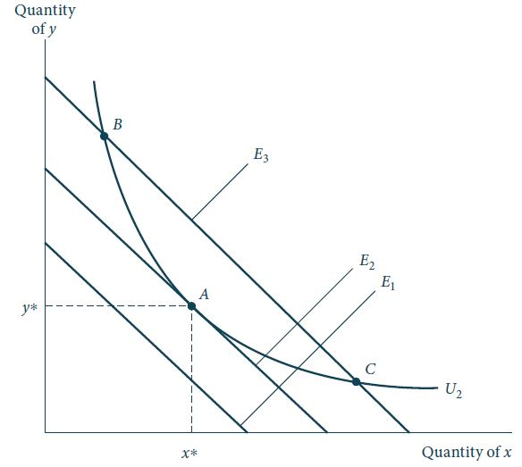
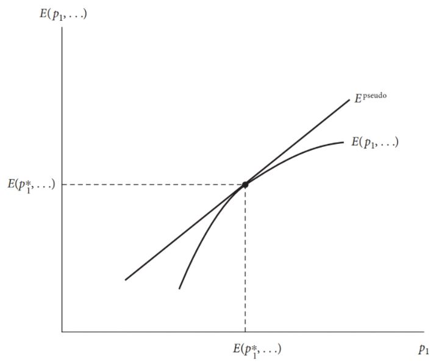

Demanda Marshalliana
Funções de demanda Marshallianas
Na aula anterior vimos como manipular as condições de primeira ordem para um problema de otimização com restrições para solucionar o problema primal do consumidor e encontrar os valores ótimos de \(x_1, x_2, \dots, x_n\).
De maneira geral, estes valores ótimos serão funções dos preços unitários de todos os bens e da renda monetária do indivíduo. Isto é:
\[\begin{aligned} x_1^* &=& x_1(p_1, p_2, \dots, p_n, I), \nonumber \\ x_2^* &=& x_2(p_1, p_2, \dots, p_n, I), \nonumber \\ &\vdots& \nonumber \\ x_n^* &=& x_n(p_1, p_2, \dots, p_n, I). \end{aligned} \qquad(1)\]
- A este conjunto de funções de demanda ( Equação 1 ) damos o nome de demandas Marshallianas em homenagem ao economista clássico Alfred Marshall.
Função de utilidade indireta
O conjunto de funções de demandas Marshallianas ( Equação 1 ) mostra qual a escolha ótima de consumo quando os preços são \(p_1, p_2, \dots, p_n\) e a renda \(I\).
Se substituirmos os valores ótimos de \(x\) na função utilidade original \(U(x_1, x_2, \dots, x_n)\), obtemos:
\[\begin{aligned} \text{utilidade máxima} &=U[x_1^*(p_1, \dots, p_n, I), \dots, x_n^*(p_1, \dots, p_n, I)] \nonumber \\ &=V(p_1, p_2, \dots, p_n, I). \end{aligned}\]
Dado o objetivo do consumidor em maximizar sua utilidade dada sua restrição orçamentária, o nível ótimo de utilidade atingível dependerá indiretamente dos preços dos bens e da renda monetária à disposição deste consumidor.
Esta dependência é observada pela função de utilidade indireta \(V\).
Mudanças nos preços dos bens ou na renda alteram o nível de utilidade que pode ser obtido.
Função de utilidade indireta
A função de utilidade indireta é um exemplo de uma função valor.
Essa função soluciona todas as variáveis endógenas em um problema de otimização deixando o valor ótimo obtido como uma função somente das variáveis exógenas.
Tal abordagem nos permite explorar como mudanças nas variáveis exógenas afetam o resultado final sem precisarmos refazer o problema de otimização original.
É importante ressaltar, no entanto, que a dependência de \(x_i\) em \(p_1, \dots, p_n\) e \(I\), e não diretamente nas quantidades consumidas dos outros bens, não implica que a escolha de consumo de um bem qualquer não dependa da escolha de consumo dos outros bens.
Significa, apenas, que as escolhas de \(x_j\) (\(j \neq i\)) estão implicitamente incorporadas na solução e foram substituídas pelos seus preços e pela renda.
Identidade de Roy
A identidade de Roy, nomeada em homenagem ao economista francês René Roy é um resultado importante em microeconomia com aplicações na escolha do consumidor e na teoria da firma.
O lema relaciona a função de demanda ordinária (Marshalliana) às derivadas da função de utilidade indireta. A equação da identidade de Roy é:
\[x_i(\boldsymbol{p},I) = -\frac{\partial V(\boldsymbol{p},I)/\partial p_i}{\partial V(\boldsymbol{p},I)/\partial I}\]
onde \(x_i\) é a demanda Marshalliana do bem \(i\), \(V\) é a função de utilidade indireta, \(p\) é o vetor de preços dos bens e \(I\) é a renda.
- É possível recuperar as demandas Marshallianas a partir da função de utilidade indireta.
Exemplos
Cobb-Douglas
Obtenha as funções de demanda Marshallianas e a função de utilidade indireta para a seguinte função utilidade do tipo Cobb-Douglas:
\[U(x,y) = x^{0,5}y^{0,5},\]
considerando a restrição orçamentária: \(p_xx + p_yy = I\).
Calcule o nível de utilidade máximo quando \(p_x = 1\), \(p_y = 4\) e \(I = 8\).
Solução
Para a função utilidade Cobb-Douglas \(U(x,y) = x^{0,5}y^{0,5}\) e a restrição orçamentária \(p_x x + p_y y = I\), as funções de demanda Marshallianas são:
\(x(p_x,p_y,I) = \frac{I}{2p_x}\)
\(y(p_x,p_y,I) = \frac{I}{2p_y}\)
A função de utilidade indireta é obtida substituindo as funções de demanda na função utilidade:
\(V(p_x,p_y,I) = U(x(p_x,p_y,I),y(p_x,p_y,I)) = \left(\frac{I}{2p_x}\right)^{0,5}\left(\frac{I}{2p_y}\right)^{0,5} = \frac{I}{2}\left(\frac{1}{\sqrt{p_x p_y}}\right)\)
Exemplos
Bens complementares
Obtenha as funções de demanda Marshallianas e a função de utilidade indireta para a seguinte função utilidade de bens complementares: \[U(x,y) = \min(x,4y)\] considerando a restrição orçamentária: \(p_xx + p_yy = I\).
Calcule o nível de utilidade máximo quando \(p_x = 1\), \(p_y = 4\) e \(I = 8\).
Exemplos
Função Cobb-Douglas
Obtenha as funções de demanda Marshallianas e a função de utilidade indireta para a seguinte função utilidade do tipo Cobb-Douglas: \[U(x,y) = x^{\alpha}y^{1-\alpha}, \qquad \alpha \in (0,1)\] considerando a restrição orçamentária: \(p_xx + p_yy = I\).
Mostre que a fração da renda consumida em cada bem é constante.
Computação Simbólica
A computação simbólica é uma ferramenta poderosa para a solução de problemas de otimização
A ideia é utilizar um software para realizar as manipulações algébricas necessárias para obter a solução analítica do problema.
Podemos utilizar ferramentas de computação simbólica para obter as funções de demanda Marshallianas e utilidade indireta para uma gama de funções utilidade
Função dispêndio e dualidade
Problema dual do consumidor
Até agora focamos no problema primal do consumidor: dados os preços de mercado e a renda, quais são as quantidades de cada bem escolhidas que maximizam sua utilidade.
Muitos dos problemas de maximização com restrições possuem um problema “dual” associado de minimização com restrições.
Para o caso de maximização de utilidade, o problema dual de minimização associado consiste em alocar a renda do indivíduo de forma a atingir um nível específico de utilidade com o menor gasto possível.
Problema dual do consumidor
Figura 1: Problema dual da minimização de dispêndio. Fonte: Nicholson e Snyder (2019).
Problema dual do consumidor: estrutra formal
O dispêndio (ou gasto) do consumidor com a cesta de bens \(\textbf{x} = (x_1, x_2, \dots, x_n)\) é dado por: \[E = p_1x_1 + p_2x_2 + \dots + p_nx_n.\]
O problema dual de minimização de dispêndio do consumidor é, então, dado por:
\[\begin{aligned} &\min_{x_1, \dots, x_n}& p_1x_1 + p_2x_2 + \dots + p_nx_n \nonumber \\ &\text{s.a.}& U(x_1, x_2, \dots, x_n) = \bar{U}. \end{aligned} \qquad(2)\]
- Ou seja, o consumidor minimiza seus gastos para um certo nível de utilidade \(\bar{U}\) que deseja alcançar.
Problema dual do consumidor: Lagrangeano
Para os casos de pontos ótimos interiores, podemos resolver o problema de minimização via método de Lagrange.
O Lagrangeano do problema Equação 2 é dado por: \[\mathcal{L} = p_1x_1 + \dots + p_nx_n + \mu\left[\bar{U} - U(x_1, x_2, \dots, x_n)\right].\]
As condições de primeira ordem associadas são dadas pelo seguinte sistema de \(n + 1\) equações:
\[\begin{aligned} p_1 &=& \mu^* \frac{\partial U}{\partial x_1}(x_1^*, x_2^*, \dots, x_n^*) \nonumber \\ p_2 &=& \mu^* \frac{\partial U}{\partial x_2}(x_1^*, x_2^*, \dots, x_n^*) \nonumber \\ &\vdots& \nonumber \\ p_n &=& \mu^* \frac{\partial U}{\partial x_n}(x_1^*, x_2^*, \dots, x_n^*) \nonumber \\ \bar{U} &=& U(x_1^*, x_2^*, \dots, x_n^*). \end{aligned}\]
Problema dual do consumidor
As \(n\) primeiras CPOs são idênticas às CPOs do problema primal do consumidor de maximização de utilidade.
A condição de que a TMS entre dois bens seja igual à razão entre seus preços de mercado continua válida.
Portanto, a solução do problema dual do consumidor satisfaz a condição de tangência entre a curva de indiferença dada por \(\bar{U}\) e a reta de dispêndio.
Apenas a última CPO é diferente, pois diz que o consumidor deseja consumir a cesta de consumo ótima que garanta um nível de utilidade igual à \(\bar{U}\).
Demandas compensadas
Função dispêndio
As quantidades ótimas consumidas de \(x_1, \dots, x_n\) neste problema são funções dos preços dos bens (\(p_1, \dots, p_n\)) e do nível de utilidade desejado \(\bar{U}\).
Se algum dos preços for alterado, ou a meta de utilidade desejada, a cesta de consumos ótima também será alterada.
Função dispêndio
A função dispêndio do indivíduo mostra os gastos mínimos necessários para atingir um determinado nível de utilidade para um dado vetor de preços: \[\text{dispêndios mínimos} = E(p_1, p_2, \dots, p_n, U).\]
Essa definição mostra que a função dispêndio, que também é uma função valor, e a função utilidade indireta são inversas.
Demandas compensadas (Hicksianas)
- As funções demanda desse problema são funções dos preços e do nível de utilidade:
\[\begin{aligned} x_1^c &=& x_1^c(p_1, p_2, \dots, p_n, \bar{U}), \nonumber \\ x_2^c &=& x_2^c(p_1, p_2, \dots, p_n, \bar{U}), \nonumber \\ &\vdots& \nonumber \\ x_n^c &=& x_n^c(p_1, p_2, \dots, p_n, \bar{U}). \end{aligned}\]
Essas funções de demanda são chamadas demandas Hicksianas (ou demandas compensadas).
As demandas Hicksianas são funções dos preços e nível de utilidade. As demandas Marshallianas são funções dos preços e do nível de renda.
Demandas compensadas (Hicksianas)
- São chamadas demandas compensadas pois elas “compensam” o consumidor de modo a mantê-lo sempre na mesma curva de indiferença \(\bar{U}\).
Figura 2: Demandas compensadas.
Demandas compensadas (Hicksianas)
A demanda Hicksiana não é diretamente observável, pois depende do nível de utilidade \(\bar{U}\).
A demanda Marshalliana, por sua vez, é diretamente observável pois depende apenas dos preços dos bens e da renda - variáveis mensuráveis.
Substituindo as demandas Hicksianas no gasto do consumidor, obtemos a função dispêndio definida anteriormente:
\[E(p_1, p_2, \dots, p_n, \bar{U}) = p_1 x_1^c(p_1, \dots, p_n, \bar{U}) + \dots + p_n x_n^c (p_1, \dots, p_n, \bar{U}).\]
- A função dispêndio mostra o gasto mínimo necessário para se alcançar o nível de utilidade \(\bar{U}\), aos preços \(\textbf{p} = (p_1, \dots, p_n)\) de mercado.
Demandas compensadas (Hicksianas)
O multiplicador de Lagrange representa o custo marginal para se obter uma unidade adicional de utilidade.
Existe uma relação entre o multiplicador de Lagrange do problema dual \(\mu\) com o multiplicador de Lagrange \(\lambda\) do problema primal:
\[\mu = \frac{p_i}{U_i}, \qquad \lambda = \frac{U_i}{p_i} \Rightarrow \mu = \frac{1}{\lambda}.\]
- Portanto, o multiplicador de Lagrange do problema de minimização é o inverso do multiplicador de Lagrange do problema de maximização.
Exemplos
Dados \(U(x,y) = x^{0,5}y^{0,5}\) e \(I = p_xx + p_yy\), a função utilidade indireta é dada por: \(V(p_x,p_y,I) = \frac{I}{2}\frac{1}{\sqrt{p_x p_y}}\). Como a função dispêndio é o inverso da utilidade indireta, temos:
\[E(p_x,p_y,U) = 2p_x^{0,5}p_y^{0,5}U.\]
Mostre que este resultado é o mesmo obtido quando resolvemos o problema de minimização.
Mostre, também, que para \(p_x = 1\), \(p_y = 4\) e uma meta de utilidade \(U = 2\), o nível mínimo de dispêndio é \(E = 8\).
Se o preço do bem \(y\) aumentar de $4 para $9, qual a compensação monetária o indivíduo necessita para manter o mesmo nível de utilidade?
Solução
\[\begin{aligned} &\min_{x, y}& p_x x + p_y y \nonumber \\ &\text{s.a.}& x^{0,5}y^{0,5} = \bar{U}. \end{aligned}\]
- \(y = \frac{\bar{U}^2}{x}\)
- \(p_x x + p_y \frac{\bar{U}^2}{x}\)
- \(p_x - p_y \bar{U}^{2}x^{-2} = 0\)
- \(x = \left(\frac{p_y}{p_x}\right)^{0,5}\bar{U}\)
- \(y = \left(\frac{p_x}{p_y}\right)^{0,5}\bar{U}\)
- \(E = p_x x + p_y y = 2p_x^{0,5}p_y^{0,5}U.\)
\(p_x = 1\), \(p_y = 4\), \(U = 2\) \(\implies E = 2\cdot 1^{0,5}\cdot 4^{0,5}\cdot 2=8\)
\(p_y\rightarrow 5 \implies E = 2\cdot 1^{0,5}\cdot 9^{0,5}\cdot 2=12\)
Logo, temos de compensar o consumidor com $4 para manter o mesmo nível de utilidade.
Exemplos
Dada a função utilidade \(U(x,y) = \min(x,4y)\), podemos calcular a função utilidade indireta: \[V(p_x,p_y,I) = \frac{I}{p_x + 0,25p_y}.\]
Portanto, a função dispêndio é dada por: \[E(p_x,p_y,U) = (p_x + 0,25p_y)U.\]
Dados, \(p_x = 1, p_y = 4\) e uma meta de utilidade \(\bar{U} = 4\), obtemos o dispêndio total de $8 como no exercício anterior.
Neste caso, se o preço do bem \(y\) aumentar de $4 para $9, os gastos deste consumidor deveriam aumentar em quanto para manter o mesmo nível de utilidade?
Propriedades da função dispêndio
- As funções dispêndio são homogêneas de grau um em todos os preços.
Função homogênea de grau k
Uma função \(f(x_1, x_2, \dots, x_n)\) é dita homogênea de grau \(k\) se:
\[f(tx_1, tx_2, \dots, tx_n) = t^kf(x_1, x_2, \dots, x_n), \qquad \forall t\geq 0.\]
- Isto quer dizer que, se todos os preços dos bens dobrarem, então, a renda dispendida também deve dobrar para que o consumidor permaneça na mesma curva de indiferença (mesmo nível de utilidade).
Exemplo
Vimos que a função dispêndio associada a uma função utilidade do tipo Cobb-Douglas \(U(x,y) = x^{0,5}y^{0,5}\) é dada por: \[E(p_x, p_y, U) = 2p_x^{0,5}p_y^{0,5}U.\]
Vamos mostrar que esta função é homogênea de grau 1.
Exemplo
Vimos que a função dispêndio associada a uma função utilidade de proporções fixas \(U(x,y) = \min(x,4y)\) é dada por: \[E(p_x, p_y, U) = (p_x + 0,25p_y)U.\] Vamos mostrar que esta função é homogênea de grau 1.
Propriedades da função dispêndio
- As funções dispêndio são não-decrescentes nos preços:
\[\frac{\partial E(p_1, \dots, p_i, \dots, p_n, U)}{\partial p_i} \geq 0, \qquad \forall i.\]
- Como a função dispêndio nos diz o gasto mínimo necessário para que o consumidor atinja um nível específico de utilidade, um aumento de preços em um bem qualquer deve aumentar esse gasto mínimo.
Propriedades da função dispêndio
Suponha que o preço de um bem aumente e dos outros permaneçam constante.
Seja \(A\) a cesta de consumos adquirida antes do aumento de preços, e \(B\) a cesta de consumos adquirida após o aumento de preços.
Claramente a cesta \(B\) custa mais após o aumento de preços do que custava antes.
No entanto, \(B\) antes do aumento de preços custava mais que a cesta \(A\) - pois \(A\) é a cesta ótima de minimiza o dispêndio do consumidor para um dado nível de utilidade.
Portanto: a cesta de consumo \(A\) custa menos que a cesta de consumo \(B\) antes do aumento de preços que, por sua vez, custa menos que a cesta de consumo \(A\) após o aumento de preços.
Logo, a cesta de consumo escolhida após o aumento de preços (\(B\)) custa mais que a cesta escolhida antes do aumento de preços (\(A\)) - função dispêndio é não decrescente nos preços.
Propriedades da função dispêndio
- A função dispêndio \(E(\textbf{p}, \bar{U})\) é côncava nos preços - ou seja, o gráfico da função está sempre abaixo de retas tangentes a ele.

Propriedades da função dispêndio
A Figura 3 mostra a função dispêndio de um consumidor como função de um único preço, \(p_1\).
Ao preço inicial, \(p_1^*\), o gasto mínimo deste indivíduo é dado por \(E(p_1^*, \dots)\).
Agora considere preços maiores ou mais baixos que \(p_1^*\). Se esse indivíduo continuasse adquirindo a mesma cesta de consumo, seus gastos iriam aumentar ou diminuir de maneira linear com as mudanças de preço.
Isso corresponde à função pseudodispêndio - ou dispêndio passivo - \(E^{\text{pseudo}}\) na figura.
Esta reta mostra o nível de gastos que permitiria a aquisição da cesta de consumo original independentemente da variação de preços.
Se, no entanto, esta pessoa ajustar sua compra à medida que \(p_1\) mudasse, sabemos que (em decorrência da minimização de gastos) os gastos reais seriam menores que esse gasto passivo.
Propriedades da função dispêndio
Portanto, a função dispêndio real, \(E\), ficará abaixo de \(E^{\text{pseudo}}\) em todos os pontos e a função será côncava.
Um resultado da concavidade é que \(f_{ii} = \partial^2 E/\partial p_i^2\leq 0\), precisamente o que mostra a Figura 3.
A concavidade da função dispêndio é um dos resultados mais importantes da aula de hoje e será uma propriedade útil para inúmeras aplicações, sobretudo para as relacionadas ao efeito substituição das mudanças de preços - que veremos nas próximas aulas.
📚 Bibliografia
NICHOLSON, W.; SNYDER C. Teoria microeconômica: Princípios básicos e aplicações. Cengage Learning Brasil, 2019. Disponível em: app.minhabiblioteca.com.br/#/books/9788522127030
VARIAN, H. R. Microeconomia: uma abordagem moderna. 9.ed. Rio de Janeiro: Elsevier, 2015. Disponível em: app.minhabiblioteca.com.br/books/9788595155107